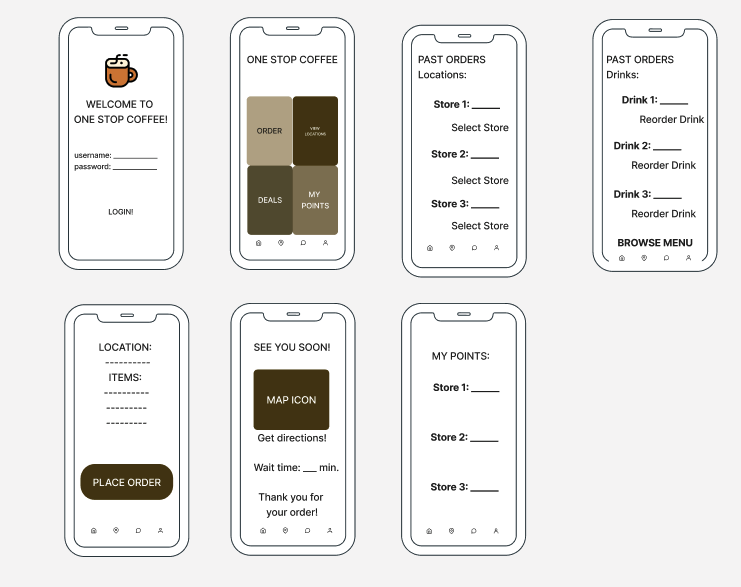
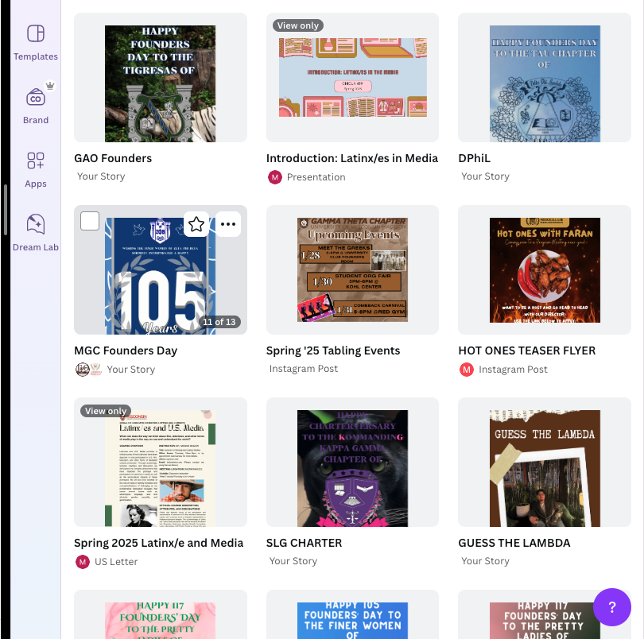

Some of Daniel's Work
For my LIS 350 class I had to submit an object/design that was not an essay about one of the topics we had covered in that unit, so I decided to recreate the way books were binded together. Through this assignment I practiced stitching for the first time! Here is the video where I recorded that process: Unessay - LIS 350 .
The image below represents my group's LIS 470 project. For this assignment we were tasked to create an application that would solve a problem that we may face. As a group we decided to create an application that made the coffee ordering process smooth and simple.
Some of the elements we focused on for this project:
- Make sure that it is user friendly. We did this by conducting many contextual inquiries.
- Team work! We all made sure to put in the same effort.
- Choose a topic that can help a wide range of individuals.
The image below shows some of the posts/flyers that I have created for my fraternity! I am not the best drawer, but when it comes to Canva I enjoy letting my imagination steer the wheel!
Songs I Recommend
| Tu Con El: Click Here | Fast Car: Click Here |
| Review: 10/10. Makes you want to get up and dance. | Review: 10/10. I was never a fan of country music, but this song has changed my mind. |
A personal project that I have is to try and listen to various genres. Above I put a list of songs and my review.
Follow me on LinkedIn!